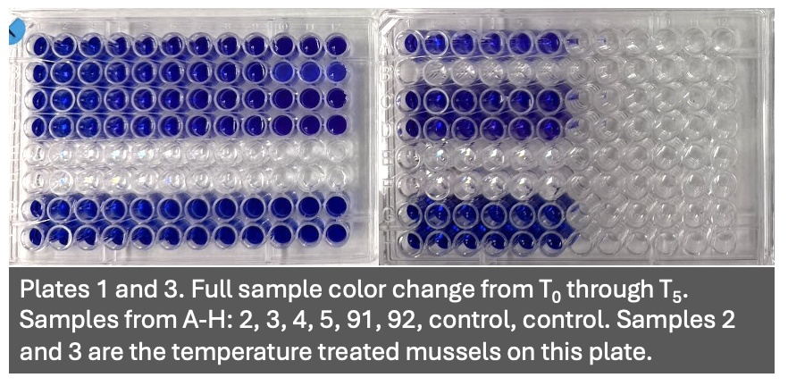

Sundays are for Seahawks & spending time with your favorite bivalve
Testing Mytilus response to resazurin assays
Following the established protocols of the Resazurin Assay (Huffmyer et al., 2025), I modified the assay to support a trial run for Mytilus trossulus. This work had two goals:
First, test the metabolic response of mussels held for 30 days in progressively increased water temperatures.
Second, assess the efficacy of the standing protocol for my next mussel experiment, particularly since mussels are less robust than oysters in several ways.
Established Protocol Adjustments
- Most of the mussels were on the larger side of the ‘large’ classification outlined in the protocol, so I measured using ImageJ as outlined, and used calipers to measure length, width, and height (in mm) to also proxy volume.
- The seawater used for the working solution was at a salinity of 27 psu, aligned with the target for the 30-day experiment. This is an adjustment for record- keeping rather than to the protocol itself.
- I purposefully selected mussels as follows:
- The heat treated mussels were similar in size, so one of the control treatment groups were specifically chosen to match size
- One exceptionally large mussel was chosen to see if size had an effect on the assay results
- All mussels used in a ‘seawater-only’ control for the assay were as identical in size as possible.
- I loaded a plate in triplicate for all values based on unclear expectations for the activity. In addition to that, the following changes to the plate load were:
- Two full rows of resazurin-only wells to ensure there was an accurate “blank” or control value to subtract background fluorescence from.
- Two full rows of seawater-only wells to verify any measured fluorescence from the seawater itself was negligible.
Setup
Before complete take- down of the 30- day survival experiment, mussels were collected (as seen below) and held in their respective tank water before being measured, photographed, and put into their assigned individual containers. A total of 12 mussels were assessed; the two remaining from the elevated temperature treatment and ten from the control temperature.
Mussels were measured two ways: first using calipers to measure width, height, and length, and second, was using ImageJ software. Mussels ranged in length from 46 mm to 96 mm with a median length of
Total working solution volume was determined using three ways: first, using caliper measurements as a proxy for volume (length x width x height) and converted to cm3 and summed for total mL; second, using the area measurement tool in ImageJ and converting the same as the first method; and finally, mechanical adding of water to a cup until the mussel was completely submerged, and then measuring that volume using a graduated cylinder. The first and third methods were closely aligned, the second was below required volume. I believe this was because I didn’t also measure width in ImageJ- this will be revisited post- analysis as a check for future experiments.

Mussels were in their treatment solution at room temperature (20° C) for approximately 35 minutes before being placed in the cold room for T1 and T2 sampling.

Moving through the experiment, there was not much notable color change in the well plates (as seen in the plate image below). This could indicate a longer testing period, or that room- temperature incubation wasn’t as effective as using the incubator.

Since this was the first time Resazurin was used with mussels in the lab, I ran all samples in triplicate to see if there were any significant deviations in activity. There was some deviation, but two of the three measurements per time cycle were identical or near- identical, so I felt confident in the readings and will run samples in a single- load versus a duplicate or triplicate in future work.
Finally, the plates at T5 are below, as is a representative image of the color change observed in the sample cups.



TL; DR - Experiment Stats
12 total samples assessed across four 96-well plates. Each plate contained the following configuration:
4 mussels in Resazurin (Rows A-D)
2 mussels in seawater- only, no Resazurin (Rows E-F)
2 Resazurin- only ‘blanks’, no mussels (Rows G-H)
All samples loaded 180 µL in triplicate, this required four total plates
Total experiment time (including setup and cleanup) was from 1120 - 1834
Mussels ranged in length from 46 mm to 96 mm with a median size of 54 mm
Total working solution (850 mL) was calculated based on the following volumes:
9 of 12 mussels required ~50 mL solution for submersion
1 of 12 mussels required 300 mL solution for submersion
2 of 12 mussels required 0 mL solution since they were seawater- only controls
2 of 2 Resazurin-only controls (no mussels) required 10 mL solution
10% additional solution (~150 mL) for slightly larger mussels and in case of mistakes/ re-run potential
Metabolic activity assessed from 1255 - 1757
T0 measured at 1255, T1 - T4 measured at hour intervals with the final T5 measurement at 1757
2 mussels from the increased temperature treatment (22° C)
1 of 2 mussels didn’t survive (mortality at T3)
1 of 2 mussels survived for the duration of the experiment
10 mussels from the control temperature (11° C)
- 10 out of 10 mussels survived for the duration of the experiment
Noticeable color change didn’t occur in most samples despite increasing activity values from the plate reader
Duration of experiment may not have reached an activity plateau indicating the need for longer experimental duration, increased incubation temperatures, or a combination to properly stress the organisms into increased or ‘maintained’ metabolic stress response.
Next steps: clone the training repo and run the analysis and visualization scripts.